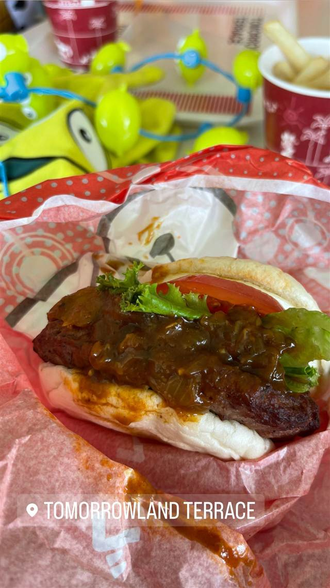

トゥモローランド・テラス
映画にちなんだベイマックス・バーガーも味わえる老舗
TOMORROWLAND TERRACE
トゥモローランド・テラスは東京ディズニーランドが開園した1983年からある老舗レストランで、パーク最大級の約1,540席を誇るハンバーガー専門のカウンターサービス店。多角形の壁や青い照明が近未来感を演出し、ベイマックス・バーガーなど映画にちなんだメニューも楽しめる。
TRIVIA
へえ、という話
- 開園時からある数少ないレストランの一つで、多角形の壁や青い照明で近未来感を演出している
- かつては惑星の名前がメニューに付けられていた時期があった
| 創業 | 1983年4月15日開業（東京ディズニーランド開園と同時） |
|---|---|
| 看板 | BLTチーズバーガー、フライドチキンバーガー（タルタルソース）、ベイマックス・バーガー |
| 予算 | 昼 ～¥1,200 夜 ～¥1,200 |
| 場所 | 舞浜駅 千葉県浦安市舞浜1-1 東京ディズニーランド トゥモローランド内 |
| 注意 | 東京ディズニーリゾート最大級となる約1,540席（屋内外合計）を持つカウンターサービスのファストフードレストラン。スポンサーは日本コカ・コーラ。 |
食べたもの：ディズニーのハンバーガー
NEARBY